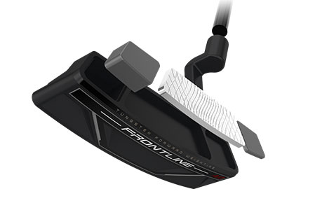

FRONTLINE 4.0 PUTTER
A classic plumber’s neck blade design, the Frontline 4.0 putter features Tungsten Forward Weighting and Speed Optimized Face Technology for more consistent putting and distance performance.
TECHNOLOGY
Forward Weights
With Tungsten Forward Weighting and the center of gravity positioned closer to the face, Frontline provides better stability through impact for straighter, more accurate putts.

Speed Optimized Face Technology
Cleveland’s proprietary Speed Optimized Face Technology pattern normalizes ball speed across the face, ensuring consistent distance performance on all your putts.
FRONTLINE 4.0 PUTTER Specs
- Model: 4.0
- Hosel type: Plumber's Neck
- Length: 33, 34", 35"
- Lie: 70°
- Loft: 3°
- Head weight: 350g
- Toe hang: moderate
- Hand: RH/LH
- Grip size: Standard / oversized
FRONTLINE 4.0 PUTTER PRICE
179 € / 199 CHF / 1 899 SEK / 159 £